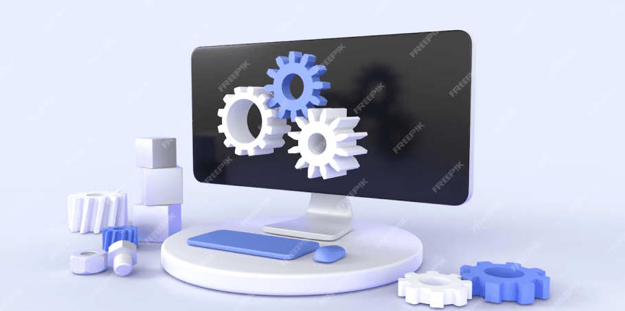

Демо-версия
За 18 лет деятельности было реализовано более 500 крупных, а так же, не менее 2500 средних и малых проектов. Используя знания и накопленный опыт мы можем предложить
Попробовать бесплатно
